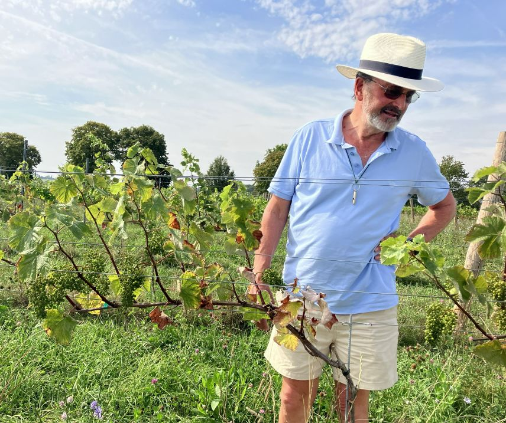
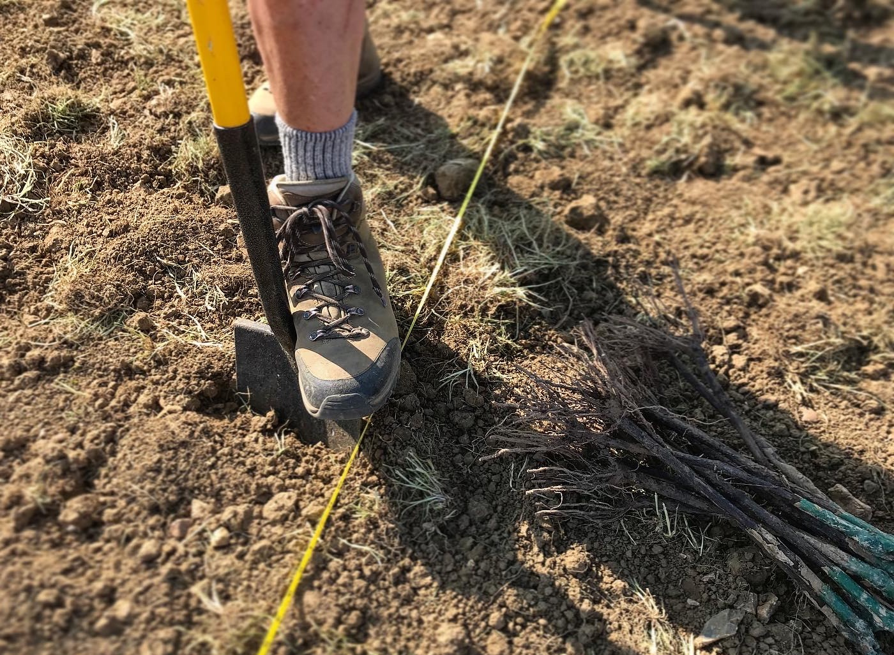

Lark Vineyard is a small, family-run vineyard in the rolling countryside of North West Essex, nestling in a small corner of The Hydes, a thousand acre arable farm. It is a passion project shared between Andrew, Heather, and Michael.
This shared passion for wine led to a viticulture course at Plumpton College, shortly followed by hand-planting of the vineyard in 2020.
Although Lark Vineyard is a collaborative effort, our unique interests and areas of expertise lend themselves well to different aspects of the project.
With Andrew's experience at the helm of The Hydes farm, he has naturally taken the responsibility of vineyard management. He ensures we are making wine with fruit of the highest quality but at the same time fosters a thriving habitat that promotes a diverse ecosystem and healthy soil.


Heather and Michael both spend their weekdays with careers in technology industries. Heather's background has given her the tools to tackle all things related to business management and customer relations. While Michael's interests in science and fermentation make him suited to looking after the winery.